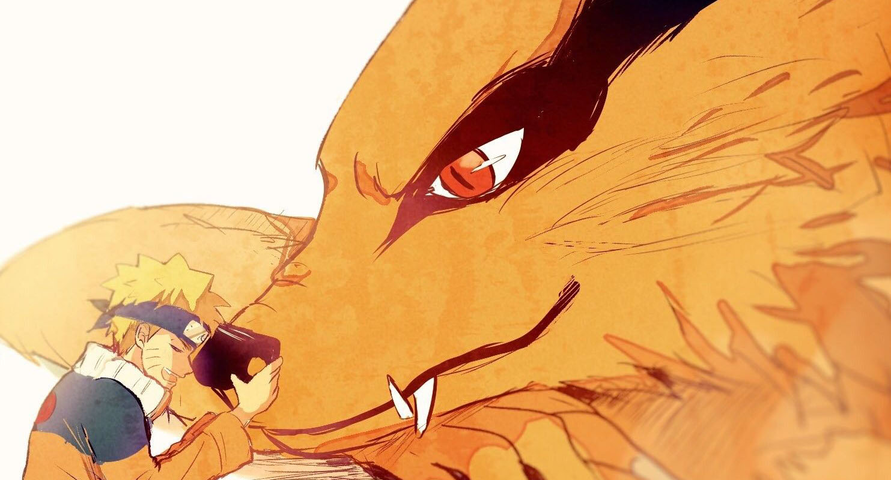
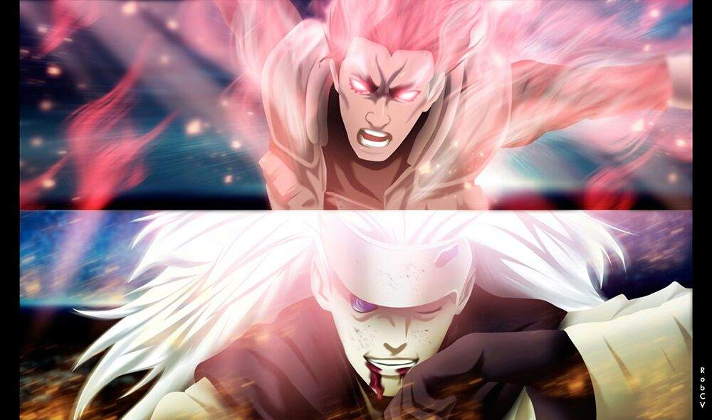
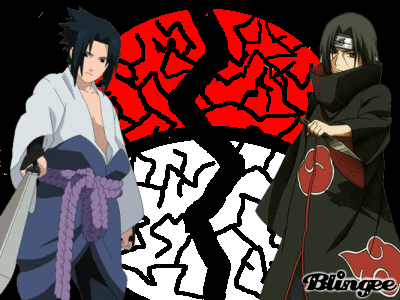
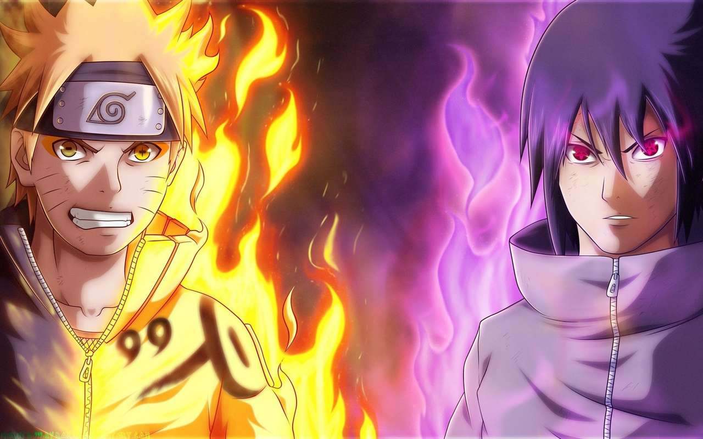
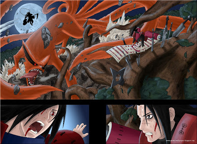
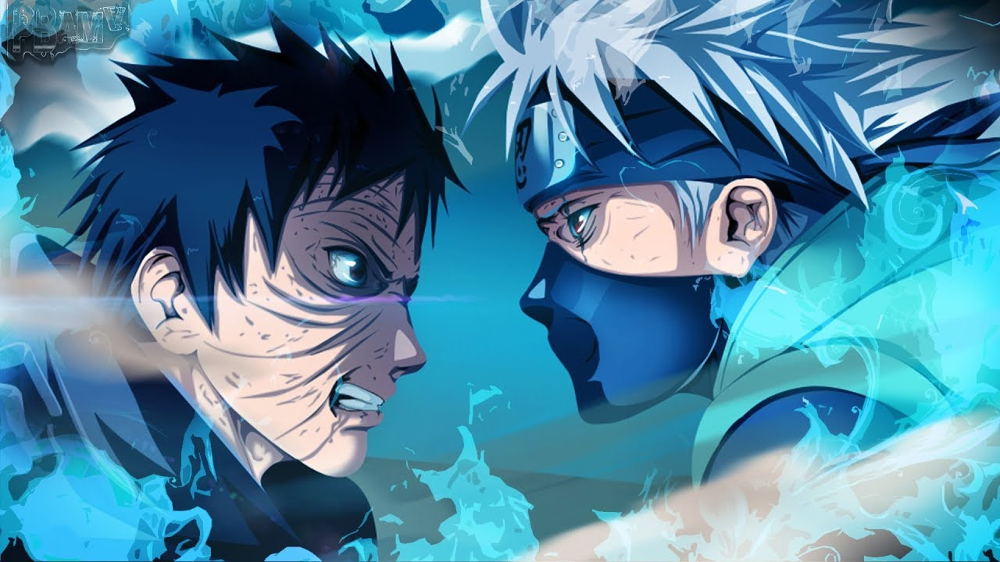
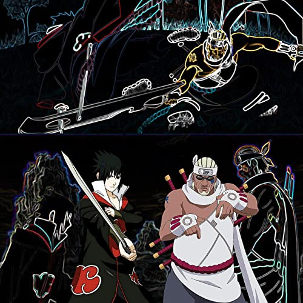
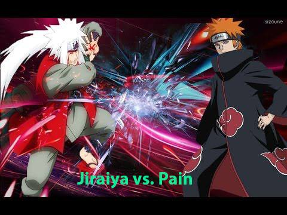
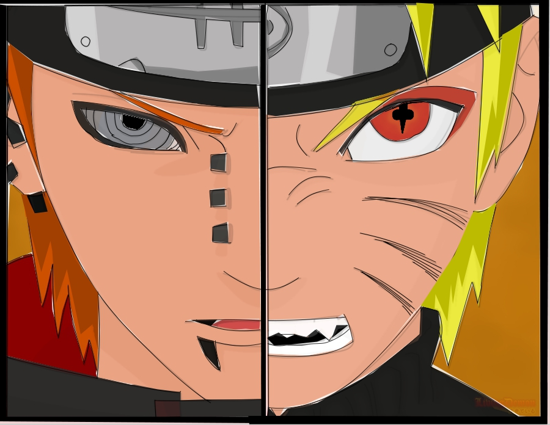

Jinchūriki (人柱力 Poder del Sacrificio Humano) es el nombre que se les da a los ninjas en los cuales es encerrado uno de los nueve Bijū existentes (monstruos de gran poder). El termino es mencionado por primera ves en la segunda parte de naruto al rescatar a gaara mencionando por la anciana Chiyo que existen mas monstruos como el y naruto el jinchuriki puede ser capaz de usar parte del chacra de su Biju adquiriendo asi el poder para realizar tecnicas mas complejas se ha sabido tambien de jinchurikis capaces de controlar por completo a la bestia en su interior como Naruto Uzumaki,Yagura,B,etc.
Naruto es un ninja adolescente hiperactivo, impredecible y ruidoso, quien aspira a convertirse afanosamente en Hokage, el máximo grado ninja en su aldea, con el propósito de ser reconocido como alguien importante dentro de la misma.
Siendo el protagonista de la historia,y jinchuriki del kyubi(nueve colas), hijo del cuarto hokague Minato Namikase y de la anterior jinchuriki del kyubi(Kurama)kushina uzumaki se dice que los ninjas del clan Uzumaki son los mas resistentes para llevar en su interior a un biju en parte tambien por ser el clan de los sellos,que utilizan con las bestias.
Kurama (九喇嘛, Kurama), también conocido como el Nueve Colas (九尾, Kyūbi) es una Bestia con Cola que se encuentra sellada dentro de Naruto Uzumaki, siendo considerada la más poderosa de las nueve bestias creadas por el Sabio de los Seis Caminos. A pesar que en la mayor parte de la serie, el chakra de Kurama estuvo dividido en dos partes, la mitad Yin y la mitad Yang, finalmente se unificaron dentro de Naruto luego de los sucesos de la Cuarta Guerra Mundial Shinobi y se mantuvo en su interior hasta su muerte por los efectos del Modo Barión.
Nivel de Poder
Atravez de toda la historia naruto demostro un gran desarrollo a nivel de sus poderes desde muy niño hasta convertirse en el septimo hokague/h3>
Modo Base
50%
Modo ermitaño
80%
Modo sabio de los 6 camimos
93%
Modo Barion
100%

Modo Ermitaño
Ermitaño
El Senjutsu o Técnica del Ermitaño, es un tipo de técnicas donde se utiliza la energía que proviene de la naturaleza y que, según el universo de Naruto, es la fuente máxima de energías del chakra de un ninja.
Modo Sabio
Sabio de los 6 caminos
El Modo Sabio de los Seis Caminos (六道仙人モード, Rikudō Sennin Mōdo) es un estado elevado del Modo Sabio que aumenta drásticamente las habilidades del usuario debido al uso del Chakra del Sabio de los Seis Caminos.
Apariencia
El Modo Sabio de los Seis Caminos de Natsu casi indistinguible de su forma normal con la excepción de que sus ojos se vuelven color amarillo con una pequeña tonalidad anaranjada y sus pupilas forman una cruz con los rasgos de su Modo Sabio combinado con el Modo Kurama pero sin manifestar la pigmentación naranja alrededor de los ojos.
Modo Barion
Barion
El Modo Barión o Modo de Partículas Pesadas, es una habilidad especial que el propio Kurama ha descrito como un último recurso. Se trata de una especie de fusión nuclear en la que el chakra de Naruto y el Zorro de Nueve Colas se consume para crear una nueva fuente de poder, en lugar de absorberlo del entorno que los rodea, como suele funcionar en el caso del Modo Sabio.
Al entrar en ésta forma, Naruto adquiere distintas características de Kurama como sus ojos y algunas marcas negras en el rostro. También adquiere una capa de chakra color naranja, similar al del pelaje del Zorro de Nueve Colas, y en el centro de la espalda posee un espiral del cual se desprenden nueve colas.
El Modo Barión mejora exponencialmente las habilidades de Naruto y Kurama, pero al mismo tiempo agota la vida útil de los usuarios, siendo un riesgo latente de muerte para ambos entes
Batallas
En el mundo del anime de naruto existieron grandes batallas desde los personajes secundarios hasta los principales, observaremos algunas de esas batallas

Madara vs Gai

Sasuke vs Itachi

Naruto vs Sasuke

Madara vs Hashirama

Obito vs Kakashi

Naruto vs Pain

Sasuke vs Killer Bee

Jiraya vs Pain
Navigate with arrow keys
Comentarios
Envianos un comentario o sugerencia para mejor la pagina te lo agradeceria